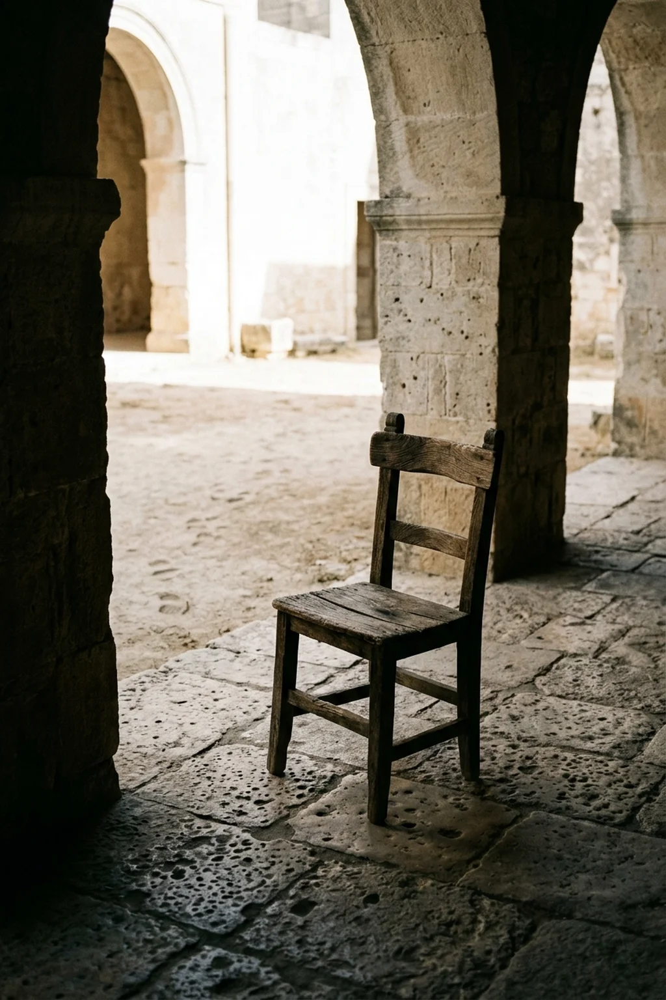
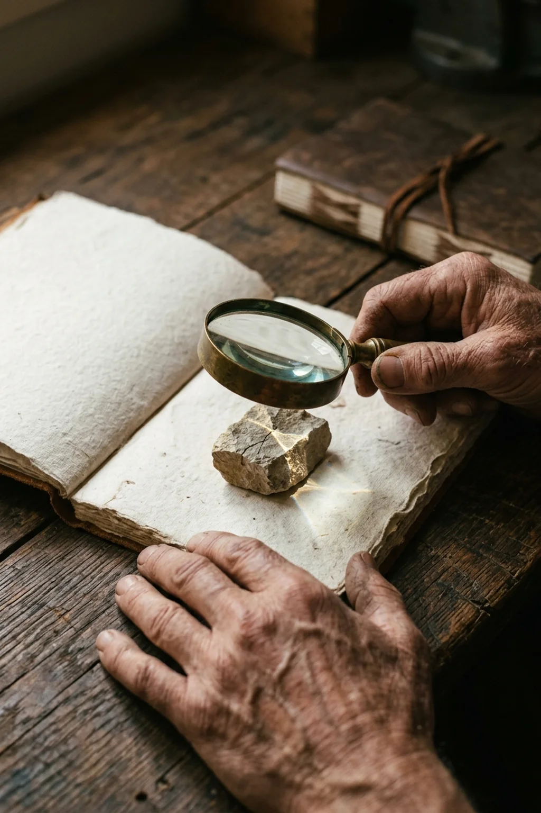
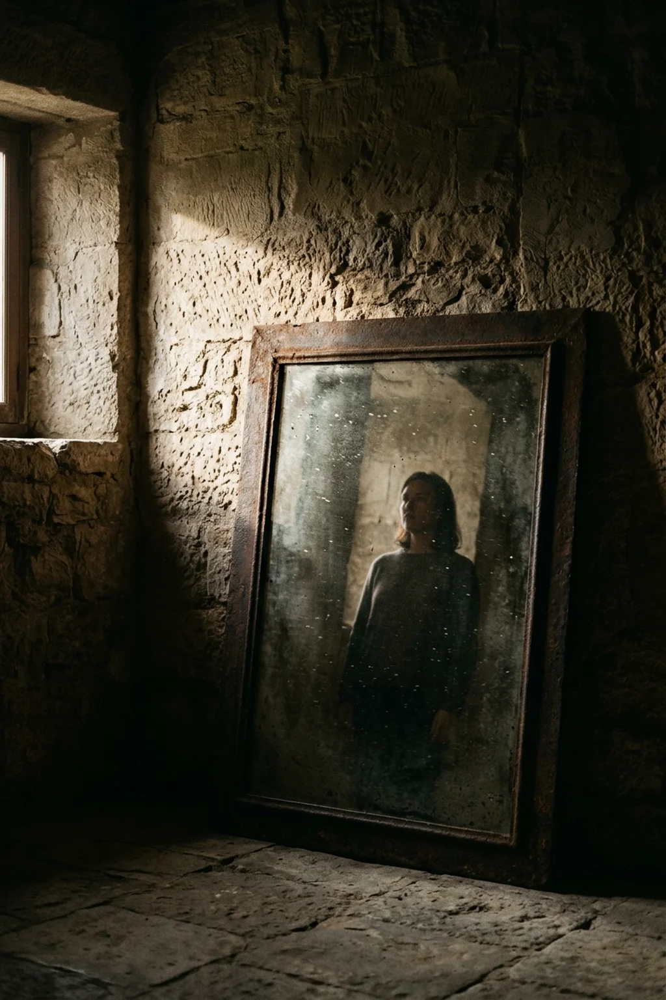

غواية الحكم السريع
لا شيء في الطبيعة الإنسانية أيسر من الجلوس على حافة الطريق وإحصاء تعثرات السائرين. لا يتطلب الأمر معرفة بالدروب، ولا حملاً للأثقال، ولا شجاعة مواجهة الغبار. يكفي أن تملك عينين معلقتين في الخارج، ولساناً يتقن إطلاق الأحكام.
إن التحديق في عيوب الآخرين ليس مجرد عادة اجتماعية عابرة، بل هو درع نفسي لا واعٍ يرتديه الإنسان ليدرأ به عن نفسه قسوة مواجهة نقائصه. حين ننشغل بتسليط الضوء على عثرة جارنا أو زلة رفيقنا، نوهم أنفسنا ضمناً بأننا أفضل حالاً، وبأن ابتعادنا عن حلبة المحاولة هو شكل من أشكال النقاء والاستقامة.
الحكم على الآخرين هو العمل المجاني الوحيد الذي يمنح صاحبه شعوراً زائفاً بالفضيلة.
راحة الجالس في الظل
الذي لا يركض لا يتعثر، والذي لا يبني لا يسقط من يده حجر. إن مقعد المتفرج هو أدفأ المقاعد وأخفها كلفة؛ فيه يجلس الناقد مستنداً إلى جدار صلب، يراقب أولئك الذين خرجوا إلى الشمس الحارقة يحاولون ويخطئون، فيظن أن سلامته ناتجة عن حكمة، بينما هي في حقيقتها ثمرة ركونه إلى السكون.
ما أسهل أن تشير بإصبعك إلى اعوجاج خطوة يخطوها من يحمل عبئاً ثقيلاً، وأنت فارغ اليدين. ولكن لو طُلب منك أن تنهض من مقعدك وتخطو خطوة واحدة في ذات الطريق، لأدركت أن ثبات الجالس ليس فضيلة، بل هو مجرد غياب للتجربة.


البحث المجهري عن القذاة
في الأثر الإنساني البليغ حكمة تلخص هذا الدأب البشري العجيب: يبصر أحدكم القذاة في عين أخيه، وينسى الجذع في عينه. نملك جميعاً عدسة تقريب خارقة الدقة حين نوجهها نحو الآخرين، نلتقط بها أدق الهفوات وأصغر الشقوق في تصرفاتهم، لكننا نتحول إلى عميان حين تُدار العدسة نحو بيوتنا الداخلية.
هذا التحديق المجهري في زلات الناس يستهلك طاقتنا الفكرية والروحية، ويصرفنا عن المشروع الوحيد الذي نمتلك سلطة حقيقية لإصلاحه: أنفسنا. إنه استنزاف للوعي في معارك لا نملك مفاتيحها، وفرار مستمر من استحقاق الصدق الداخلي.
بين التحديق الخارجي ومواجهة الذات
اختر الموقف لتدرك الفرق في أثر النظر ومآله:
راحة المراقبة واستنزاف الطاقة
التفتيش المستمر في نوايا الآخرين وعثراتهم يمنحك رضا لحظياً زائفاً، لكنه يملأ الروح بالمرارة والحسد، ويترك مساحتك الخاصة خراباً بلا بناء.
شجاعة الصدق ونضج البصيرة
تحويل النظر نحو الداخل يوقفك وجهاً لوجه أمام عيوبك الحقيقية. إنها مواجهة شاقة لا يقوى عليها إلا الشجعان، لكنها الباب الوحيد للحرية والارتقاء.
المرآة ومواجهة النفس
حين يقرر الإنسان أن يرفع عينيه عن عيوب الآخرين ويلتفت إلى المرآة، تتغير قواعد اللعبة كلها. في المرآة لا مجال للمواربة؛ فكل تبرير كان يصلح أمام الناس يسقط هنا، وكل ادعاء بالكمال يتلاشى أمام الحقيقة العارية.
إن أصعب نشاط بشري، على الإطلاق، هو مواجهة المرآة بعين منصفة لا ترحم الوهم ولا تقنط من الإصلاح. وعندما يبدأ المرء في إصلاح صدوعه الخاصة، تصبح عثرات الناس في عينيه موضع فهم ورفق لا موضع سخرية وتحديق.
كفّ عن التحديق في وجوه العابرين، والتفت إلى مرآتك: هناك يبدأ الإصلاح الحقيقي، وهناك وحدك تصنع الفرق.
